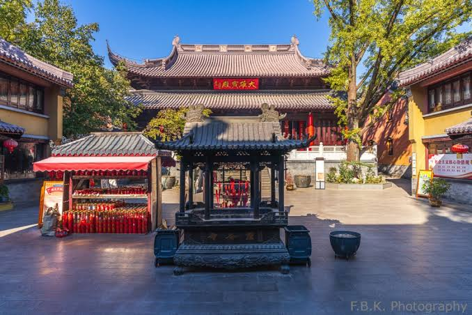

1 · Identity
Who is represented?
Start with the evidence: inscription, attributes, repeated type, placement, or comparison with known images. Do not identify a figure only from a general impression.
Image reading · Form and meaning
A Buddhist image does not communicate through a face alone. Identity emerges from a combination of form, gesture, object, posture, clothing, location, and ritual use.
How a Buddhist image makes meaning visible
In Nanjing, images appeared in caves, halls, pagodas, shrines, and later museum displays. The same visual detail could carry different force depending on where it was placed and who approached it.
This page offers a method for students. It is a guide to asking better questions, not a substitute for identifying each sculpture from a photograph and a specialist catalogue.

Six things to read
Use these categories together when identifying a Buddha, bodhisattva, monk, or protective figure.
1 · Identity
Start with the evidence: inscription, attributes, repeated type, placement, or comparison with known images. Do not identify a figure only from a general impression.
2 · Appearance
Hair, crown, robe, ear ornaments, bodily proportions, and facial expression can distinguish a Buddha from a bodhisattva or a historical monk, but details must be read as a group.
3 · Hand gesture
Gestures such as meditation, teaching, fearlessness, or giving can connect the image to a ritual or doctrinal idea. A damaged hand should be marked as uncertain.
4 · Held object
A lotus, vessel, staff, scripture, jewel, or other object can narrow an identification and suggest compassion, discipline, wisdom, healing, or protection.
5 · Posture and setting
Seated, standing, reclining, or riding figures address viewers differently. Lotus seats, halos, cave niches, and surrounding figures create a visual hierarchy.
6 · Tradition
Images may participate in Tiantai, Chan, Pure Land, esoteric, Vinaya, or wider devotional practices. The tradition must be established from context, not guessed from style alone.
A student’s reading sequence
Separate what you can see from what you infer.
Record posture, clothing, gesture, objects, damage, scale, and location without assigning an identity too quickly.
Use inscriptions, nearby figures, dated examples, and published catalogues to test the first impression.
Ask what teaching, ritual, or social relationship the image made visible for the people who encountered it.
Evidence rule: In a website photograph, damaged or reconstructed details may be hard to identify. Use “possibly,” “probably,” or “not yet identified” when the evidence is incomplete. Compare the image with the object and place that frames it.